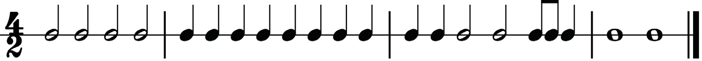
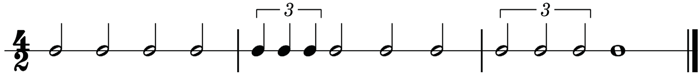
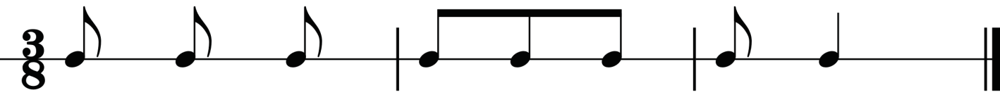
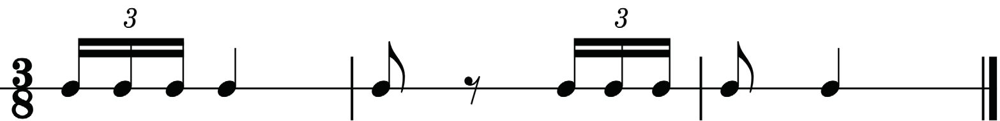

A three-eight time signature: This time signature shows that there are three quavers in a bar. In a three-eight time, the value of one beat is regarded as a quaver. Figures 1.18 and 1.19 show examples of rhythms in three-eight time.


Counting rhythms according to specific simple time signatures
Rhythms written in various simple time signatures can be counted and clapped using either numbers or syllables. In this section, you will learn how to count various rhythms and clap the main beats in two-two, three-two, four-two and three-eight times.
A two-two time signature
There are two minim beats in each bar when counting a rhythm in two-two time. Also, the value of a beat is regarded as a minim. Therefore, you will count from one to two in each bar. The examples in figures 1.20, 1.21 and 1.22 show how to count aloud a rhythm in two-two time while clapping the main beats.